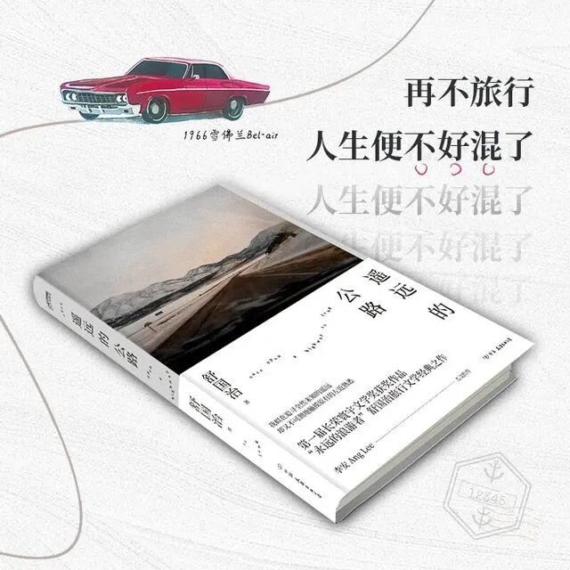

title: 很多人的旅行，都是”装”出来的｜舒国治专访 date: 2026-03-17 category: 转载 tags: [旅行] top: 25
一切生活都应该自然而然，旅行就像走路，迈开腿，走出去，晃荡到哪里算哪里。
作者｜朱人奉 编辑｜桃子酱
题图｜台北市大安森林公园
世界上有两种旅行，一种是”舒式旅行”，另一种是其他人的旅行。
“舒”是作家舒国治的”舒”。1998年，他凭借散文《遥远的公路》获得第一届长荣寰宇文学奖首奖，颇有横空出世的感觉。决审评委詹宏志说，这就是该奖项所要寻找的”硬派旅行文学”，有一种”老练旅行者的声音”。”老练”，詹宏志用的是英文词”vintage”，通常也称为”老派”。
詹宏志自己就是旅行作家，他不仅熟悉华语旅行文学的发展，也亲自参与其中。他很好奇：”在中国台湾新开启的旅行文学时代里，为什么会单独出现一位（像舒国治这样的）格外成熟的旅行者？”
东玩玩、西看看，晃荡到哪里算哪里
经过20世纪80年代的”出境旅游热”，20世纪90年代，旅行文学出现井喷之态。按学者张瑞芬的观察，当时台湾旅行文学有三种：最多的是”物化”类，也就是shopping式的旅游记述，读者尽可以按图索骥、依次打卡；其次是”回归心灵”类，有更多的自我检视和文化反省，三毛和余秋雨是其中的代表；最后是”结合环保”的作品，像刘克襄的写作关注自然和在地生活。直到今日，这三大类别依然是旅行写作的主流。
但舒国治的旅行不属于以上任何一种。
很难说他是一名称职的旅行作家。所谓”称职”，最基本的一条就是作家对旅行写作有清晰的自觉意识，把自己作为方法，不断走、不断写，积累出成体系的作品。而这些作品，通常是跟读者介绍一个目的地，或者告诉读者如何抵达那个目的地。
舒国治不这么干。他非常散漫，写过小说，评过金庸，谈过美食，最喜欢写的就是吃、喝、拉、撒、睡等生活小事，而且把它们都当成头等大事来对待。当我在广州见到他，打算和他聊点旅行文学，却免不了碰壁。他懒散地往椅背上一靠，悠悠地说：”我没有什么真正的旅行，就是天天在外头，东玩玩、西看看。”
不过这”东玩玩、西看看”，却是一流散文的手笔，有点像扫地僧的功夫，举手投足都是绝活。
就以散文集《遥远的公路》来说，这是舒国治于1983—1990年在美国穿州过省的漫游记录。他横越美国的方式和约翰·斯坦贝克不大一样，斯坦贝克经常进入当地人的家里了解民情，舒国治却坚持自己的”门外汉哲学”，只在门外看，绝不走进去。但他看得极准、极丰富。
比如他驱车经过美国小镇时，路边的民居，让他看到了一种浓郁的”人味”：”每一幢房子都有自己的相貌……这有一点道出了早年每人是按自己想要的样子而建出来的。尤其是拓荒年代。他们自己砍木、自己竖柱架梁盖出来的。这种’自己要的样子’，流露在哪怕已是建商成群盖出来的这整条街上的几十幢房子里。”他形容这些木制房屋给人一种”充满欢乐、充满童趣的’玩具感’”，让人读来有恍然大悟之感。
梁文道说过，舒国治的眼光很锐利。当香港人习惯把中国香港视为”福地”时，舒国治说这里其实是”穷山恶水”：”由于没有多少平地，他们总要在那么弯曲狭窄的水道旁边盖楼，这些楼一面紧贴被人工铲平削尖的山丘，另一面就是曲折的海岸了，这么险要的地势，竟然就住了这么多人。”这就是罗大佑在《青春舞曲2000》中所唱的香港，”一亩梯田容万千住户”，”高楼似一片树林建在荒山上”。
所以，舒国治的旅行并不遵循一般意义上的指南，他也不怎么关注别人的旅行文学作品。他所称道的旅行指南是老派的，比如美国在20世纪30年代大萧条时期集结众多文人编撰的WPA各州指南，还有1923年徐珂编的《西湖游览指南》，1929年陆费执原辑、舒新城重编的《实地步行杭州西湖游览指南》。在他看来，这些旅行指南极其精当、实用，没有什么废话。
这些约100年前撰写的旅行笔记和旅行指南，今日还有参考价值吗？在AI时代，人们的旅行开始被算法高度定制。有媒体在年轻人中发起调查，82.6%的受访者认为，AI在旅游中的应用越来越普及，包括用AI来推荐目的地、规划路线、制定旅行预算。
对舒国治来说，AI时代应该如何旅行，是一个不成问题的问题。他认为一切生活都应该自然而然，旅行就像走路，迈开腿，走出去，晃荡到哪里算哪里。就像风清扬的”独孤九剑”，无招胜有招。

任性，是倾听自己内部的需要
在《忆杨德昌》一书里，舒国治谈到杨德昌导演的一个生活习惯：早上出门，抓一个苹果，背着书包，走进工作室，开始做事；也穿西装，外套直接套在T恤外面，配牛仔裤，完全是美国大学校园流行的穿法（杨德昌有留美经历）。
舒国治说，这便是他这些年常常讲的生活观——“泡茶绝不用穿上茶人服”“打太极拳不穿唐装，照样可以好看”。旅行，也不是非得做出一个旅行的样子。相反，他认为很多旅行的样子都是”装”出来的。
“找旅行社规划好几月几日要去哪里，很多做时尚的人还要特意拍好看的照片。旅行箱要多好，住酒店要带多少东西，入住后要把衣服拿出来挂好……这是旅行吗？这是把家搬出去了。”
在旅途中，舒国治完全是李白和苏轼的做派，如闲人秉烛夜游，把天地视为逆旅。年轻时在北美大地晃荡，他多数时候就睡在车里，首先要找地方停车，”最好是挑选居民停好车后并不拔出钥匙的那种小镇”。他在购物中心、大学校园、教堂、博物馆、花店等的停车场都睡过。
舒国治认为，睡在车里是极妙的旅行体验，在一片辽远的大地，”在夜幕深笼下静悄悄而又孤单单地在天地之间只为放下七尺之躯而寻觅一方角落却又每夜不同”。
如今到了古稀之年，舒国治不怎么开车了，但睡觉仍然是他最大的享受，因为睡觉最契合他懒散而任性的性格。或许可以说，詹宏志当年想解答的那个问题，最简略的回答就藏在此处。
文章谈到他小时候的懒惰和任性：”后来我写东西谈及任性，其实主要讲的是睡下去爬不起来的那种原始任性。我所谓的任性，不是小孩在饭桌上无理取闹，父母骂’你别太任性了喔’那种；是你坐火车自京都欲往宇治，没两三站已困到睁不开眼睛，结果索性让自己睡过站，一直睡到底站奈良，再从奈良往回坐。明明20多分钟车程，结果七八十分钟才抵定点，但也只因如此，你多睡了香甜的与世无争的几十分钟。我说的任性，是指这种倾听自己内部的需要。”
“你去想，到底有啥事，重要到使你不懒？其实还真不多。当然那跟时代有关，时代是穷的，人没啥可以去发展的，所以懒，没啥搞头，干脆懒，因懒遂发展出逃避。学校功课不好好努力，而去看武侠小说，这即是逃避；回家很闷，很不想回，遂在田埂、鱼塘多混一下，多玩一阵，这即是逃避。这类事体到了长大后，就美其名变成了旅行，变成了流浪。”
回想起来，在接受我的采访时，舒国治常常看着窗外回答问题，不紧不慢，但并非心不在焉。正是晌午时分，外面阳光明亮，树影斑驳，年轻人来来往往，三三两两，步入广州最好的天气里。
Q&A
《新周刊》：你理想的一天是如何过的？
舒国治：我没有固定的规律。晚上都是看电视，瞎看，常常看不了太久就困了。白天偶尔会写稿，早上不吃东西，胡思乱想，写一点点就行，然后就得出去动动腿脚。一天两顿，上午十点多（吃）午饭，下午四五点（吃）晚饭。为了早一点出门去咖啡馆，晚饭通常吃得很简单，有时候只吃个便当，一盘100多元新台币，就已经很养生了。我最希望黄昏的时候到咖啡馆去，从六点半到八点半，这时咖啡馆最安静，我可以好好做点自己的事情。
《新周刊》：这10年来你有一个非常养生的爱好——打太极拳。2025年你写了《我与打拳》这本书，讲自己怎么练站、练气、打拳，逐渐有”灵台清明”之感。打拳要达到什么程度，才有这种效果？
舒国治：我蛮喜欢打拳，但我打得不多，属于”说得一口好拳”的那种人。有的人是职业打拳的，他们可能还会被我批评：”你打了一辈子，就打成这样？”职业拳师在我这里不一定就不扣分。世界上有一些人，他们的人生是冤枉的，哪怕是一辈子做菜的厨子，甚至是名厨，结果却做出这样差的菜。他们的头衔，在我这里没用。
再举个拍电影的例子。有人说：”我一辈子拍电影。”我转头跟侯导（侯孝贤）讲：”他说他拍了一辈子电影耶。”侯导说：”对呀，有这样的人，他就一辈子拍嘛。”反倒是刚开始拍电影的年轻人，大导演可能会觉得他的拍法很好。
老拳师也应该有这种趣味。看到刚开始练拳的人——比如我自己瞎踢——老拳师有那么零点几秒会觉得：”你这个腿踢得好，谁教你的？”我是说，你要看到乐趣。
《新周刊》：你的旅行史长达四五十年，到了今天有什么新的变化？
舒国治：近年我很少去爬那种很累人的山。自然景观我固然还是喜欢的，但不要有难度的。这当然跟自己的体能有关系，也因为我的懒散，慢慢地不在乎，想过得再粗糙一点、马虎一点。就好像吃饭一样，我不是非得吃得多么好——差不多好，就是很好了。如果还要更好，我还嫌它麻烦。
旅行这件事，原来很多人都看《孤独星球》（Lonely Planet），后来都在手机上看了。有的人需要看别人写的导引，不顺着别人的guide（指南），他就不知道看什么；还有一种旅行者，他们出发前看的东西非常少，不小心撞上的风景比较多。我现在倾向于第二种，我对那个地方知道一个梗概就行，最好知道得再少一点，其他风景等到了那里再看。
《新周刊》：你还会开车旅行吗？
舒国治：我以前在美国必须开车。现在也可以开，但我没有车，也没有太大的耐心在车上了。我会抛弃这个技术，不然太费力了。我现在比较希望坐别人的车，公交车或者出租车。哪怕是到车程两个小时以上的地方，我自己开车能节省50分钟，但我转换几趟捷运和公交车，慢一点也可以，路上还可以稍微打个盹。
《新周刊》：这几年很流行讲Citywalk，你有没有听过？
舒国治：我不太理解，很反感这些名词。城市本来就很容易逛，你要去哪里，直接去就好。在成都、苏州、杭州，我都走过不少地方，这算Citywalk吗？这些名词流行起来之后，好像人人都要去哪个地方，跟某条旅行路线走一下。我们不需要管别人的路线，好玩的地方，本身就能成为一条路线，成为导引。
来源：新周刊